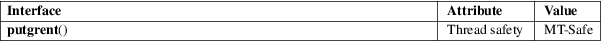

putgrent − write a group database entry to a file
Standard C library (libc, −lc)
#define
_GNU_SOURCE /* See feature_test_macros(7) */
#include <grp.h>
int putgrent(const struct group *restrict grp, FILE *restrict stream);
The putgrent() function is the counterpart for fgetgrent(3). The function writes the content of the provided struct group into the stream. The list of group members must be NULL-terminated or NULL-initialized.
The struct group is defined as follows:
struct group {
char *gr_name; /* group name */
char *gr_passwd; /* group password */
gid_t gr_gid; /* group ID */
char **gr_mem; /* group members */
};
The function returns zero on success, and a nonzero value on error.
For an explanation of the terms used in this section, see attributes(7).

GNU.
fgetgrent(3), getgrent(3), group(5)